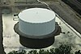

storage-tank
phenomenon

Source: Wikipedia
Wikipedia Page (Something wrong with this association? Let us know.)
Wikidata Page (Something wrong with this association? Let us know.)
Occurs in:
- storage-tank~open-top_outlet_water_flowing__speed
- storage-tank~open-top_outlet_x-section__area
- storage-tank~open-top_water__depth
- storage-tank~open-top_water__initial_depth
- storage-tank~open-top_water__volume
- storage-tank~open-top_x-section~horizontal__area
- storage-tank~open-top_x-section~horizontal_circle__radius